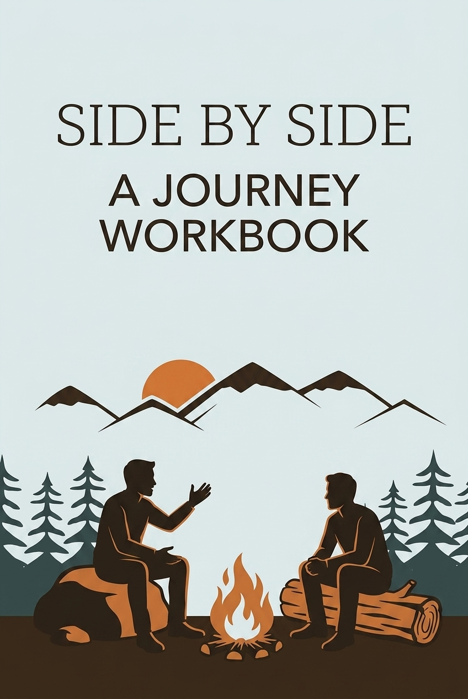

“The glory of God is man fully alive.” — St. Irenaeus
This workbook is for men who sense the stirring of something deeper within them—a holy unrest, a divine dissatisfaction with a life of passivity, compromise, or confusion. Perhaps you’ve missed a season of growth, skipped a stage of formation, or are carrying unhealed wounds that still shape how you see yourself, God, and others. This is not the end of your story—it is the beginning of your awakening.
In the path of Christian maturity, manhood is not achieved overnight; it is a gradual journey of restoration and growth. Scriptural and historical teachings suggest a healthy maturation path for a man consists of several vital phases. Each phase is crucial. Each has a role in shaping who a man becomes. But many men, for a host of reasons—family brokenness, fatherlessness, trauma, distraction, or spiritual neglect—miss key milestones in their formation.
We often miss the formative season of discovery—a time of healthy adventure, safe risks, and learning who we are before our strength is tested by the weight of adult responsibilities. If you feel there are missing chapters in your growth, this is not a cause for shame. It is an invitation. The path of mature manhood can still be entered, but it must be entered with awareness, intention, and humility. A mature man of God is not a bully or a brute, but one who stands firm for what is right from a secure place of identity and purpose. He protects, serves, builds, and loves. This journey is not about fixing yourself but allowing Christ to restore and commission you.
You are not too late. The call to true manhood still rings out for you. It’s time to respond. Not with fear or bravado—but with willingness, courage, and a heart open to the transforming love of God. This is the journey of becoming the man you were always meant to be.
Welcome to the journey. Let’s begin.
Welcome to Session 1. This is where your journey begins—not the one you’ve been surviving, but the one your soul has been waiting for.
Every man is on a path. Some are walking in circles. Some are running from pain. Others are frozen at the crossroads, unsure which way leads to life. This first session is about stopping. It’s about taking an honest look at where you’ve been, where you are, and what may have been missed along the way.
God’s design for masculine growth is not chaotic or random. It is sacred. It unfolds in seasons—each one building on the last. But the truth is, most of us weren’t clearly shown the way. We absorbed distorted messages about what it means to be a man: Be tough. Don’t cry. Prove yourself. Never fail. These messages left us wounded, confused, or stuck.
This is not about blame. It’s about awareness. Because we cannot walk forward into healing and strength until we name the places we’ve skipped, rushed, or avoided altogether. It’s about discovering that the journey of becoming a man is not a solo mission or a performance. It’s a path of formation—guided by truth, grounded in brotherhood, and empowered by God.
In this session, we look back—not to dwell in the past, but to trace how our story unfolded. You’ll create a life timeline, reflect on the early messages you received about masculinity, and invite God to begin revealing the patterns that shaped you.
This is your orientation. Your moment to pause, breathe, and ask, “Where am I, really?” Because until we know where we are, we cannot truly know where we’re going.
“Stand at the crossroads and look; ask for the ancient paths, ask where the good way is, and walk in it, and you will find rest for your souls.” — Jeremiah 6:16
Let’s begin—with honesty, humility, and hope.
Theme: Discovering the masculine journey; identifying missing pieces
Scriptures: Jeremiah 6:16, Ecclesiastes 3:1
Quote: “Growth requires honest self-awareness. We cannot move forward without first knowing where we stand.” — Dr. Larry Crabb
Teaching Point: The masculine journey is not random; it is seasonal and sacred. Many men unknowingly skipped key stages in their growth, particularly those of adventure, discipline, and affirmation. Understanding what was missed and what must be recovered is the beginning of real maturity.
Prompt: What are the early messages I internalized about being a man?
Action: Read Psalm 139 and begin a daily journal. Create a timeline of life events and reflect on moments that shaped your understanding of masculinity.
Create a life timeline. Mark key events in boyhood, teenage years, and adulthood that shaped or wounded you. Bring this timeline to your next group or personal reflection time.
Before a man can fight, lead, or serve with strength, he must first know who he is. That’s where we begin in Session 2—with identity.
Too many men spend their lives chasing validation—trying to earn worth through achievement, performance, or approval. We put on masks, play roles, and carry titles, hoping they’ll fill the ache inside. But at the core of every man’s heart is a question: “Do I matter? Am I enough? Who am I, really?”
The truth is, identity isn’t earned. It’s received.
God doesn’t wait for us to succeed before calling us His sons. He speaks identity before we lift a finger. Just as He declared over Jesus, “This is my beloved Son, in whom I am well pleased,” God speaks that same truth over every man who belongs to Him. Before you perform, before you prove, before you produce—you are already loved.
This session is an invitation to stop striving and start receiving. It’s about learning to live from identity, not for it. You’ll reflect on the roles, labels, and lies you’ve picked up along the way—and begin to lay them down. You’ll replace them with the voice of the Father, who names you with love, purpose, and belonging.
Romans 8 tells us that those who are led by the Spirit of God are sons of God—not slaves, not orphans, not outsiders. Sons. And sons live differently. Sons walk with confidence, rest in grace, and rise with courage.
This week, you’ll write and speak a personal declaration of who you are in Christ. Not who the world says you are. Not who shame says you are. But who He says you are.
“You are not a mistake. You are not an afterthought. You are a beloved son of the Father.”
Let’s reclaim your true name.
Theme: Receiving your identity as a beloved son
Scriptures: Romans 8:14-17, Isaiah 43:1, Ephesians 2:10
Quote: “We live out who we believe we are. Identity precedes behavior.” — Neil T. Anderson
Teaching Point: Many men try to earn worth through performance or approval, but God’s love defines who we are before we achieve anything. Being secure in your identity as God’s beloved son is the foundation for every stage that follows.
Prompt: What labels or roles have I accepted that contradict God's truth?
Action: Write a daily declaration of identity in Christ and speak it aloud each morning.
Write a personal declaration of who you are in Christ based on Scripture. Speak it aloud each day this week.
Every man carries a “father story”. Some are stories of love, strength, and presence. But for many, they are stories marked by absence, silence, or pain. Whether your father was physically gone, emotionally distant, overly harsh, or simply unaware, the impact remains. Even if he did his best—if something was missing, you felt it. And it shaped you.
This is called the father wound. And it runs deeper than most of us realize.
The wound isn’t about blame—it’s about naming. Because what we don’t acknowledge will keep leading us. The unspoken ache for a father’s blessing, the unhealed grief over what we didn’t receive, the silent vows we made to never be like him or never need anyone again—these become hidden scripts that play out in our lives.
God is not asking you to pretend it didn’t hurt. He’s asking you to bring the pain into the light, where healing can begin.
In this session, you’ll be invited to ask hard but honest questions:
You’ll write an unsent letter to your father—not to accuse, but to express the truth. Let the rawness rise. Let the grief speak. And then, offer it to God.
Psalm 68 tells us that God is a Father to the fatherless. That doesn’t just mean orphans—it means you. He steps into the gap left by human failure. He sees, He knows, and He heals.
This isn’t easy work. But it’s the work of freedom. As you name what was lost, you open your heart to receive what only the Father can give.
You are not alone in this. Let’s walk this part of the journey with honesty, with courage, and with Christ right beside you. He is not afraid of your wound. He is already moving toward it with healing in His hands.
Theme: Naming and grieving father wounds
Scriptures: Psalm 68:5-6, Joel 2:25, Psalm 147:3
Quote: “A man cannot become whole until he faces the wounds of his past with Christ.” — Dan Allender
Teaching Point: Wounds left unacknowledged still lead. Healing begins when we bravely name the absence, pain, or failure of the father figure in our life. Jesus wants to meet you in your loss, not deny it.
Prompt: What did I most long to hear or receive from my father? What was withheld?
Action: Write an unsent letter to your father. Let the raw truth rise, then offer that letter to God for healing.
Write your unsent letter to your earthly father. Be entirely honest, and let God meet you inside that pain.
There is a moment in every man’s life when he needs to hear words that reach beyond performance, beyond effort, beyond past wounds. Words not of critique or correction—but of blessing. This session is about that moment.
Whether you received it or not from your earthly father, your heart was designed for a blessing—a spoken affirmation of identity, purpose, and delight. Without it, a man often lives uncertain, striving, always wondering if he measures up. But when a father speaks blessing, it anchors a man’s soul. It gives him the permission to be who he was made to be.
The good news is this: even if no earthly father ever spoke those words over you, your Heavenly Father still can. And He longs to.
In Matthew 3:17, before Jesus had performed a single miracle or preached a single sermon, the Father declared: “This is my Son, whom I love; with Him I am well pleased.” That same blessing is spoken over you—not because of your achievements, but because of your identity as a son.
In this session, you’ll be invited to listen—truly listen—for the voice of your Father. To quiet the noise of self-doubt, shame, and striving. To open your heart and ask: What does God call me? What does He see when He looks at me?
You’ll also be encouraged to reflect, to write, and even to invite a spiritual father or mentor to speak words of life and affirmation over you. Because blessing is more than affirmation—it’s transformation. It calls you into purpose. It restores what was missed.
God delights in you. He’s not ashamed of you. He knows your name—and He blesses it. You don’t have to earn it. Just receive it.
Theme: Letting God speak identity and delight over you
Scriptures: Matthew 3:17, Numbers 6:24-26
Quote: “Blessing calls out identity, and identity gives purpose. A man cannot thrive without knowing the Father’s voice.” — Dr. John Townsend
Teaching Point: God the Father still speaks. He blesses you with delight, identity, and purpose—not because you perform, but because you are His. Receiving the Father’s blessing isn’t just emotional; it’s spiritual grounding.
Prompt: Can I imagine God saying “I delight in you”? Why or why not?
Action: Spend time in quiet listening. Write what you believe God is speaking over you.
Spend 30+ minutes in a quiet place, asking God: “What do You call me? How do You see me?” Write down what you hear or perceive during that time.
Every man is in a spiritual struggle—whether he realizes it or not.
But too many are unprepared. We fight the wrong enemies, wield the wrong weapons, or walk onto the field in spiritual weakness, emotional fatigue, and inner confusion. That’s not how we are meant to live. This session is about training—not for comfort, but for courage. Not for survival, but for spiritual strength.
A man of God is not formed in a moment of adrenaline. He is forged through routine, perseverance, and discipline. The great struggles of life—against fear, lies, temptation, shame, and spiritual apathy—require more than willpower. They require a man who knows who he is, knows what he’s standing for, and is rooted in a daily rhythm that connects him to the power of God.
Ephesians 6 tells us to “put on the full armor of God.” That isn’t a one-time event; it’s a daily decision. A mature man trains his body, soul, and spirit—not to prove something to others, but to withstand trials and resist the pull of darkness, standing firm in the truth of who he is.
This week, you’ll be invited to examine your spiritual life with honesty. Where are you undisciplined? Where are you weak? Not to feel shame—but to start building strength. You’ll begin creating a daily rhythm of prayer, scripture, reflection, and worship. Start small. Stay consistent. Let God begin forming resilience in you.
“Be strong and courageous. Do not be afraid; do not be discouraged, for the Lord your God will be with you wherever you go.” — Joshua 1:9
God is with you. But He also trains you. You were not made for spiritual laziness. You were made to be alert, ready, and grounded. You were made to stand strong. Now it's time to train like it.
Theme: Developing readiness, discipline, and spiritual strength
Scriptures: Joshua 1:9, Psalm 18:34, Ephesians 6:10-18
Quote: “Spiritual warfare begins with identity and is sustained by obedience.” — Chip Ingram
Teaching Point: God calls every man to stand firm—not against people, but against spiritual darkness and lies. Strength is built through daily routine, Scripture, and perseverance. God wants to build resilience in you.
Prompt: Where am I undisciplined, and how does that impact my spiritual strength?
Action: Build a simple daily spiritual routine (prayer, Word, reflection). Start small and stay consistent.
Begin a simple morning rhythm of prayer, scripture, and actively declaring the armor of God over your day.
There comes a point in every man’s journey when he must ask the deeper question: Why am I here? Not “what do I do for work,” or “how do I keep busy,” but “what was I made for?” This session is about uncovering that answer.
God didn’t create you to drift through life. You were designed with a purpose—crafted by His hands, planted in this generation, in your exact circumstances, for a mission that matters. But calling isn’t always flashy or obvious. It doesn’t always come with applause or titles. Sometimes it looks like showing up consistently, standing for what’s right, or simply being faithful in the quiet places.
As men, we often confuse calling with career. But your mission goes deeper than your job. It’s about Kingdom influence—using your unique gifts, burdens, and story to serve, build, and bring God’s light into the world around you.
This week, you’ll begin asking: What breaks my heart? What injustice stirs me? Where has God placed me—and for what purpose? You’ll be challenged to identify your burdens, your gifts, and the places they intersect. From there, you’ll begin crafting a personal mission statement—a compass that gives focus and direction to your steps.
“The purposes of a person’s heart are deep waters, but one who has insight draws them out.” — Proverbs 20:5
This session is about drawing it out—listening deeply and honestly to what God has placed inside you. Your mission doesn’t need to be grand to be powerful. It just needs to be faithful. And the world is waiting for men who know why they’re here—and live like it.
Let’s step into the clarity and courage that come when you finally name your calling.
Theme: Understanding your God-given purpose
Scriptures: Micah 6:8, Proverbs 20:5, 1 Corinthians 16:13-14
Quote: “Purpose doesn’t have to be grand—it has to be faithful.” — Dallas Willard
Teaching Point: Every man is made for purpose—not just career, but Kingdom influence. God’s calling is not about titles; it’s about faithful living and serving where you are planted. Mission gives a man focus and drive.
Prompt: What burdens me in the world? What gifts do I have to meet that need?
Action: Write a draft mission statement. Review it regularly and align daily decisions with it.
Write your personal mission statement (1-2 sentences). Place it where you can see it and pray it each morning.
At some point on the masculine journey, every man faces a threshold—a place where the next step isn’t safe, certain, or easy. It’s here that the question arises: Will I trust God enough to move forward—even when I can’t see what’s next?
This session is about courage—not the absence of fear, but the presence of faith.
Courage isn’t loud. It’s not reckless. It’s often quiet and trembling—but obedient. It shows up when we take risks that matter, when we say yes before all the answers are clear, when we lean into the unknown because God is already there.
In Hebrews 11, we read about Abraham, who “obeyed and went, even though he did not know where he was going.” That’s the kind of faith God is calling you into—not blind trust, but bold trust. A trust rooted in God's character more than your comfort.
Most men live with an inner longing for significance, but few ever take the risks required to step into it. Why? Because fear whispers: What if I fail? What if I’m not enough? What if I get hurt again? But God’s voice is stronger—if you’ll listen. It says: I am with you. Step out. I will lead you.
In this session, you’ll identify where fear has held you back—and you’ll name one act of courage you’re being called to take. It may be a conversation you’ve avoided, a dream you’ve shelved, or a decision that requires trust. Whatever it is, this is your moment to act.
“Trust in the Lord with all your heart and lean not on your own understanding; in all your ways submit to Him, and He will make your paths straight.” — Proverbs 3:5–6
Faith doesn’t always feel safe. But it always leads you closer to the man God created you to be. You were not made to sit on the sidelines. This is your step. This is your moment. Take it.
Theme: Embracing uncertainty with faith
Scriptures: Hebrews 11:8, Proverbs 3:5-6, Psalm 32:8
Quote: “Faith is taking the first step even when you don't see the whole staircase.” — Dr. Martin Luther King Jr.
Teaching Point: Courage doesn’t mean no fear—it means trust that obeys. Every man is called to move forward before he feels ready. God reveals more as you obey.
Prompt: Where is God asking me to trust Him with a step into the unknown?
Action: Identify one risk or act of obedience and take that step this week.
Begin each day with a surrender prayer: “God, lead me. I will follow even if I cannot see.”
A true man of God does not live for ego, power, or position. He uses his strength to serve and protect others.
Masculinity, at its best, is not about dominance—it’s about sacrifice. Real strength is not self-serving; it’s protective. It shows in the quiet resolve to stand guard over your family, to advocate for the vulnerable, to speak up when injustice is near, and to lay your life down—not just once, but daily.
This session marks a shift. Up to now, you’ve been doing the deep inner work: healing wounds, reclaiming your identity, building strength, and naming your mission. But the journey isn’t just about you. God shapes men not for isolation, but for impact.
Jesus modeled this perfectly. He came not to be served, but to serve—to fight for hearts, restore the broken, and lift the oppressed. That same Spirit lives in you. Now, you’re invited to ask:
“Fight for your families, your sons and your daughters, your wives and your homes.” — Nehemiah 4:14
This is not a poetic metaphor. It is a divine mandate.
In this session, you’ll reflect on the people around you—family, friends, community—and ask where your strength is needed most. You’ll identify a tangible way to act: a conversation, a decision, a sacrifice, a stand. And you’ll take it—not to prove you’re strong, but to use your strength in love.
This is what mature manhood looks like. Not a man who fights against others, but one who stands up for them. You were made to stand in the gap. To be a protector. A shield. A servant. Let’s rise to that call.
Theme: Becoming a protector and advocate
Scriptures: Nehemiah 4:14, Matthew 20:26-28, Philippians 2:3-4
Quote: “Real masculinity protects, provides, and lays down its life.” — Dr. Tony Evans
Teaching Point: A man's strength is not for self-glory—it is for the defense and service of others. God calls men to be advocates for the weak, voices for the voiceless, and shields for the vulnerable.
Prompt: Who in my life needs my strength, advocacy, or presence?
Action: Choose a tangible act of service this week—especially for someone in need.
Write a prayer of commitment to serve your family, friends, or community. Act on one concrete act of service this week.
Every man longs for a brother. Someone who truly sees him, stands with him, sharpens him, and walks beside him.
But let’s be honest—many men don’t experience that kind of brotherhood. Instead, they live in quiet isolation, hiding behind strength or success, keeping others at arm’s length. Some have tried to trust, only to be betrayed or disappointed. Others have never known what real male friendship can look like. So they walk alone.
But here’s the truth: you were never meant to walk alone.
God designed brotherhood as a sacred part of the masculine journey. Ecclesiastes reminds us that “Two are better than one… If either of them falls down, one can help the other up.” Strength in solitude is a myth. Real strength is tested and refined in community.
This session is about reclaiming that truth—and, for many, healing from where brotherhood went wrong. You’ll be invited to look honestly at your story:
Brotherhood is not about perfection. It’s about presence. It’s about showing up with honesty, listening without fixing, and choosing loyalty even when it’s hard. Real brotherhood doesn’t shame weakness—it strengthens it.
You’ll also be challenged to initiate—to reach out, reconnect, or open up to a mentor, a friend, or a fellow traveler on this journey. Healing begins with vulnerability. And growth accelerates when it’s shared.
“As iron sharpens iron, so one man sharpens another.” — Proverbs 27:17
You weren’t built to do life alone. You were made for brotherhood. You are not alone. And you don’t have to be anymore.
Theme: Engaging in authentic community
Scriptures: Ecclesiastes 4:9-10, James 5:16, Proverbs 27:17
Quote: “You are only as strong as the brother who walks beside you.” — Stephen Mansfield
Teaching Point: Isolation weakens men. Brotherhood refines, challenges, and heals. But many men carry wounds from past betrayals. Healing and growth come when you risk again.
Prompt: What walls have I built between myself and other men?
Action: Reconnect or initiate with a brother or mentor. Share honestly.
Reconnect with a trusted man or mentor this week. Share a current burden or ask for prayer regarding a specific area of your life.
Few areas shape a man’s inner world as powerfully—or as painfully—as his sexuality. It is a sacred gift from God, meant to reflect intimacy, covenant, and life. But in our culture—and often in our own stories—sexuality has been twisted, wounded, or weaponized. Many men carry secret struggles, hidden shame, or a deep sense of failure. Others have numbed out, given in, or given up.
But hear this clearly: sexual integrity is not about shame. It’s about freedom. And this session is not about perfection. It’s about healing.
God didn’t create you for bondage. He created you for wholeness—where your desires are not repressed but redeemed, where your body is honored, and where love is expressed in truth, not distortion.
This session invites you to bring your whole story into the light:
Job declared, “I made a covenant with my eyes not to look lustfully…” (Job 31:1). This was not weakness. It was strength—strength rooted in conviction, vision, and accountability.
You’ll be encouraged this week to create a plan—a practical, grace-filled strategy—for walking in sexual integrity. Boundaries, support, routines, and prayer are not signs of failure; they are tools for freedom. You may need to reach out for help. Do it. That, too, is strength.
God is not shocked by your struggle. He’s already moving toward you with healing in His hands. This is your invitation to begin walking in the light—free, whole, and unashamed.
“Search me, O God… test me and know my anxious thoughts. See if there is any offensive way in me, and lead me in the way everlasting.” — Psalm 139:23-24
This is the way of honor. The way of truth. The way home.
Theme: Walking in purity and honoring your body and others
Scriptures: 1 Thessalonians 4:3-5, Job 31:1, 2 Timothy 2:22
Quote: “Sexual purity is not repression, but freedom to love without shame.” — Dr. Juli Slattery
Teaching Point: God designed sexuality as sacred and powerful. When misused, it brings shame and bondage. Sexual wholeness isn’t just abstinence—it’s living aligned with honor, love, and freedom.
Prompt: How has broken sexual desire or shame shaped my story?
Action: Create a plan for purity, including boundaries, support systems, and grace.
Write a personal purity covenant with God. Include practical action steps and name your accountability partner.
Becoming a strong man of God doesn’t happen in a moment. It happens in the everyday.
True strength is not built on emotion or inspiration—it’s forged in rhythm. In the quiet, consistent choices you make when no one is watching. In the habits that train your heart, renew your mind, and align your spirit with God’s truth. This session is about developing that rhythm—and learning to live by it.
Every man is on a spiritual path, and strength isn't built by showing up unprepared. Men of God don't grow in strength by accident. They train. They practice. They build endurance. The same is true spiritually.
This week, you’ll be invited to take ownership of your spiritual life—to design a daily rhythm that works for you and strengthens the character God is forming in you. It doesn’t need to be long or perfect. But it must be intentional.
Jesus Himself rose early to pray. He withdrew to be with the Father. He modeled a life of consistent connection, solitude, and surrender. That wasn’t weakness. It was the source of His power.
In this session, you’ll build a personal rhythm—Scripture, prayer, journaling, silence, gratitude. Even five focused minutes a day can change the direction of your life. You’ll also take stock:
“Set your minds on things above, not on earthly things… For you died, and your life is now hidden with Christ in God.” — Colossians 3:2-3
This isn’t about checking boxes. It’s about staying connected to your Source. Daily. Faithfully. Quietly. Powerfully. Because in the rhythms of surrender, strength is born. Let’s build yours—step by step, day by day.
Theme: Building daily spiritual strength and endurance
Scriptures: Mark 1:35, Psalm 119:105, Colossians 3:2-3
Quote: “A man of God is not built in a moment—but in a daily rhythm of surrender and strength.” — Richard Foster
Teaching Point: Men are formed in daily, quiet places. Building a sustainable, simple rhythm of Word, prayer, solitude, and worship gives lasting strength.
Prompt: What habits build strength in my inner life?
Action: Design a personal daily rhythm and practice it for 7 days.
Design a 7-day rhythm of spiritual practices, write it down, and track your daily consistency this week.
You’ve come a long way.
Twelve sessions ago, you stood at the beginning of a journey—unsure of where it would lead, but willing to face what needed to be faced. Along the way, you’ve named wounds, reclaimed your identity, learned to stand with purpose, and rediscovered your calling as a man of God.
Now, the journey doesn’t end here—it begins again. But something has changed. You’re no longer walking in confusion or passivity. You are walking as a man commissioned for purpose.
This session is about recognizing what God has formed in you—and stepping into it with confidence and humility. Not self-confidence. God-confidence. Because the strength you now carry isn’t your own. It’s the result of surrender, healing, and obedience.
“I have fought the good fight, I have finished the race, I have kept the faith.” — 2 Timothy 4:7
That’s the posture of a mature man of God. Not perfect, but faithful. Not without scars, but full of courage.
Now it’s time to step up. To lead. To serve. To protect. To pour into others what has been poured into you. Whether in your home, your friendships, your church, or your community—you have a role to play. You are no longer just receiving the mission. You are now carrying it forward.
This final session is a “commissioning”. A time to declare who you are, who God is, and what you’re committed to. You’ll write your Manhood Declaration—a prayer, a mission, a legacy—and speak it over your life. If possible, invite a mentor, brother, or group to affirm and pray over you.
Because this journey is not just about personal growth—it’s about Kingdom impact.
Jesus said, “You did not choose Me, but I chose you and appointed you to go and bear fruit—fruit that will last.” (John 15:16)
You’ve been chosen. You’ve been equipped. You’ve been healed. Now—you’re being sent.
Theme: Stepping into your role with confidence and humility
Scriptures: 2 Timothy 4:7, Isaiah 61:1-4, John 15:16
Quote: “You were not born to drift. You were commissioned to conquer darkness.” — Erwin McManus
Teaching Point: This journey isn’t for self-help—it’s for mission. You were chosen by God to step up, serve, and lead. Now you walk forward as a man commissioned for purpose, always dependent on Christ.
Prompt: What legacy do I want to leave as a man of God?
Action: Plan a small commissioning moment. Invite a mentor or group to affirm your journey and mission.
Write your Manhood Declaration—your prayer, mission, and legacy. Read it regularly and carry it with you.
Brother, you made it.
Not just to the end of a workbook—but to the threshold of a new way of living. These pages were never just about reflection or information. They were about transformation. About awakening the man you were always meant to be.
You have faced your wounds with courage. You have reclaimed your identity as a beloved son. You have learned to stand in truth, fight with purpose, and love with strength. You’ve been equipped not just to survive—but to lead, to serve, to build, and to bless.
This is no small thing.
But don’t mistake this moment for the finish line. This is a beginning. A launch point. A commissioning. Because now the world needs what has been formed in you. Your family needs it. Your brothers need it. Your community needs it.
The battles will continue. The road won’t always be easy. But you are no longer the same. You are no longer walking blind or alone. You are rooted. Grounded. Called. You know who you are—and whose you are.
You’ve been given a sword of truth, a shield of faith, and a heart that beats with the love of your Father. You’ve walked this journey side by side. Now, carry it forward—side by side with others.
“I am a son of God, called by name, equipped for life, healed by grace, and walking forward in faith—not fear. I will not turn back. I will not go alone. I was made for this.”
Hold that close. Read it often. Live it boldly.
And when the days get dark, or the journey feels long, remember—you’re not alone. Christ goes before you. Your brothers walk beside you. And the Spirit within you will never fail.
This is your time. Now go—and live as the man you were created to be.
Scripture References: Scripture quotations are from the Holy Bible, New International Version® (NIV®), unless otherwise noted. Copyright © 1973, 1978, 1984, 2011 by Biblica, Inc.™ Used by permission. All rights reserved worldwide.
| # | Quote | Author | Verified or Probable Source |
|---|---|---|---|
| 1 | "The glory of God is man fully alive." | St. Irenaeus | Against Heresies, Book IV, Chapter 20 (ca. 180 A.D.) |
| 2 | "Growth requires honest self-awareness. We cannot move forward without first knowing where we stand." | Dr. Larry Crabb | Inside Out (NavPress, 1988) |
| 3 | "We live out who we believe we are. Identity precedes behavior." | Neil T. Anderson | Victory Over the Darkness (Bethany House, 2000) |
| 4 | "A man cannot become whole until he faces the wounds of his past with Christ." | Dan Allender | The Wounded Heart or Healing the Wounded Heart |
| 5 | "Blessing calls out identity, and identity gives purpose. A man cannot thrive without knowing the Father’s voice." | Dr. John Townsend | Leadership Beyond Reason (Zondervan, 2011) |
| 6 | "Spiritual warfare begins with identity and is sustained by obedience." | Chip Ingram | The Invisible War (Baker Books, 2006) |
| 7 | "Purpose doesn’t have to be grand—it has to be faithful." | Dallas Willard | Paraphrase from works including Renovation of the Heart |
| 8 | "Faith is taking the first step even when you don't see the whole staircase." | Dr. Martin Luther King Jr. | Commonly attributed; thematic match in Strength to Love (1963) |
| 9 | "Real masculinity protects, provides, and lays down its life." | Dr. Tony Evans | Kingdom Man (Tyndale, 2012) |
| 10 | "You are only as strong as the brother who walks beside you." | Stephen Mansfield | Mansfield’s Book of Manly Men (Thomas Nelson, 2013) |
| 11 | "Sexual purity is not repression, but freedom to love without shame." | Dr. Juli Slattery | Rethinking Sexuality (Multnomah, 2018) |
| 12 | "A man of God is not built in a moment—but in a daily rhythm of surrender and strength." | Richard Foster | Thematic paraphrase from Celebration of Discipline (1978) |
| 13 | "You were not born to drift. You were commissioned to conquer darkness." | Erwin McManus | The Way of the Warrior (WaterBrook, 2019) |